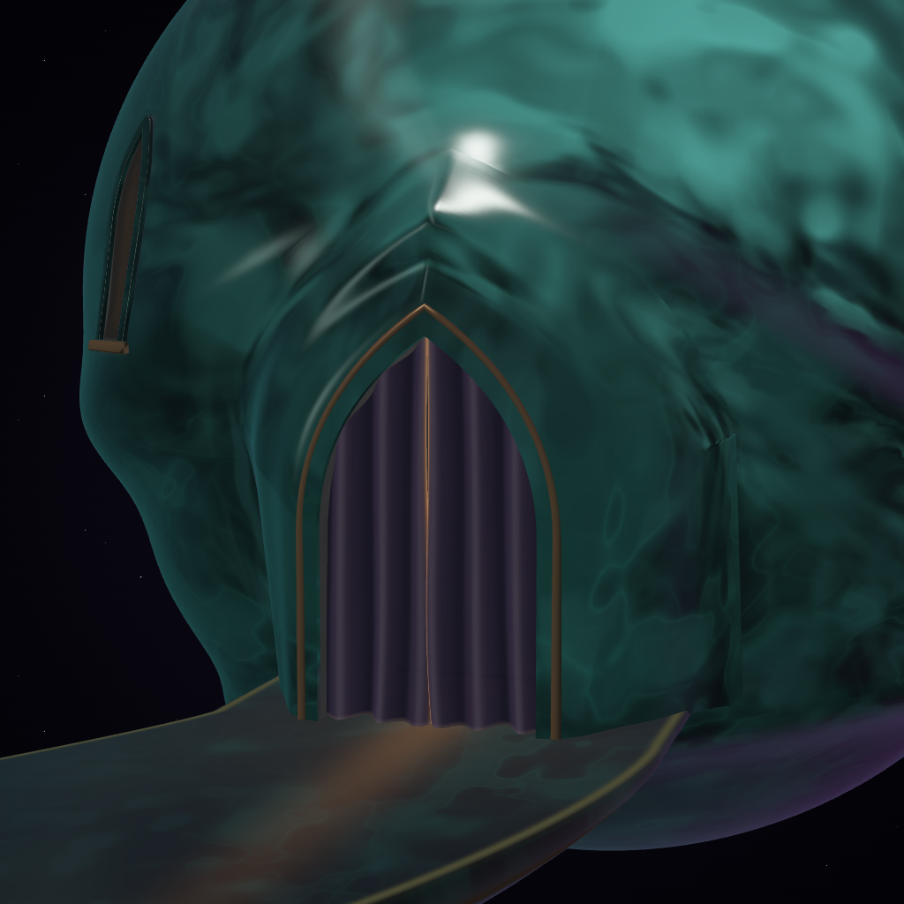
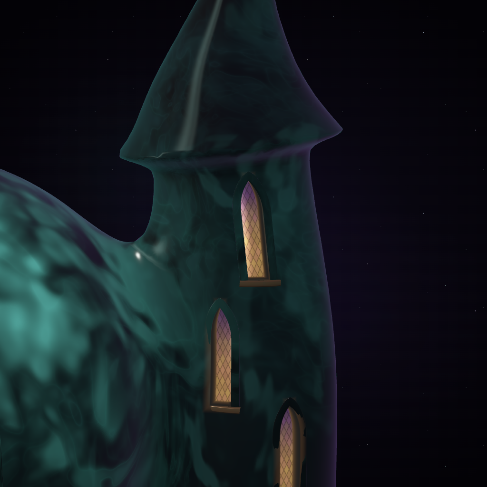
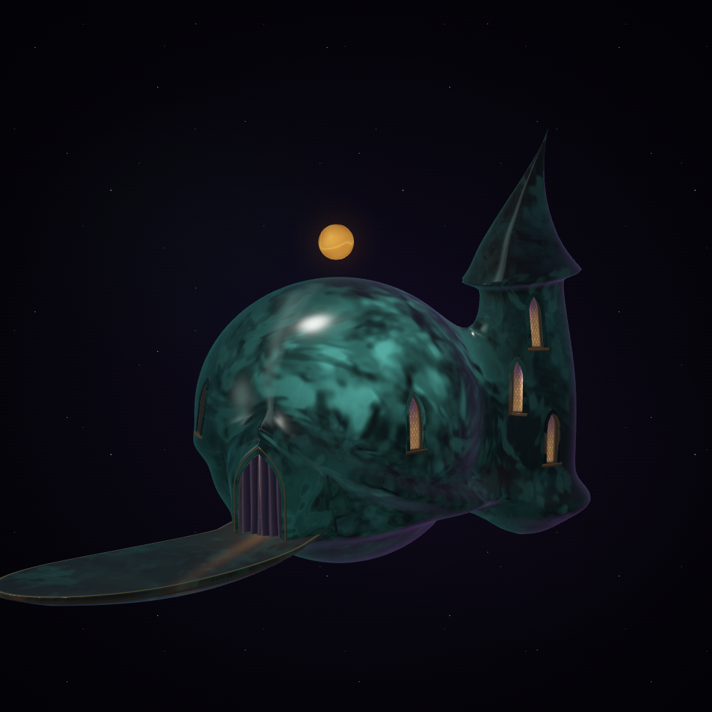
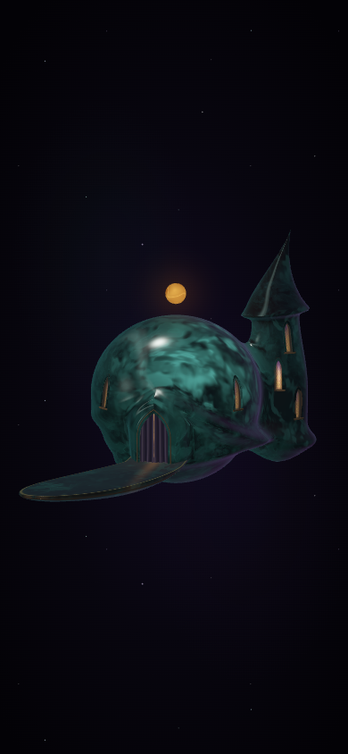
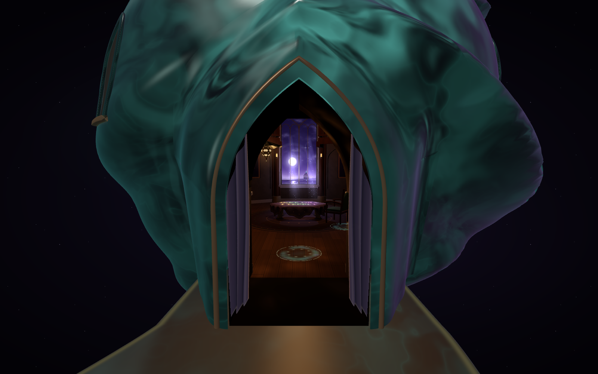

Concept B / Liquid Sanctuary
Phase 2 — glass depth and inner light
The approved Phase 1 geometry and camera are unchanged. This pass concentrates on deeper teal glass, blue-violet reflections, warm windows and a continuous material across the entrance and tower. All implementation images are actual browser captures.
Design reference — original Concept B, main-view crop
Phase 2 — actual render, 1024 × 1024, time 8.05 s
Review the material, not a new shape: the depth of the dome, the balance of dark glass and inner light, the violet edge, and how the entrance and tower belong to the same material.
Still short of the reference: the clouds and reflections are softer and less intricate. The porch join remains visible in close-up, and the existing spire/roof edge and window mouldings still have geometric facets. These have not been remodelled in this material pass.
Both comparison renders use the same approved camera, dimensions and animation time. The concept is artwork; its right-hand detail column is cropped only in the comparison above. Open the full original reference.
Material details

Entrance — unified glass, darker violet cloth and a warm central seam. Phase 1 close-up

Tower — subtle internal material, warm-violet panes and softened light spill
Another angle and narrow-screen framing

Three-quarter diagnostic view
390 × 844, DPR 1 desktop emulationThrough the same door into the existing room

Integrated entrance capture. The room and readiness flow are unchanged.Handoff, exact measurements and verification commands · Machine-readable evidence · Archived Phase 1 review